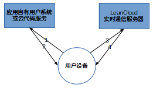
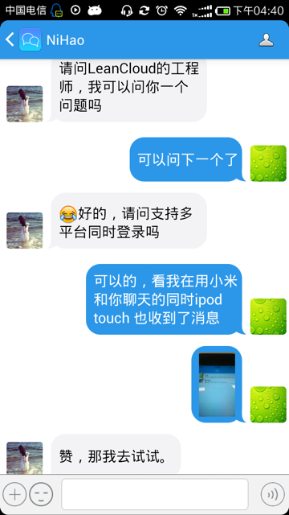
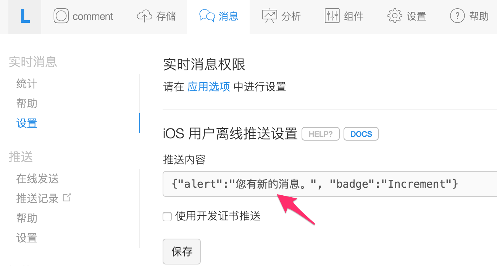
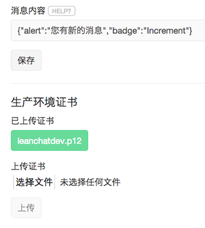
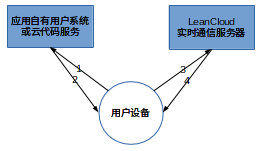
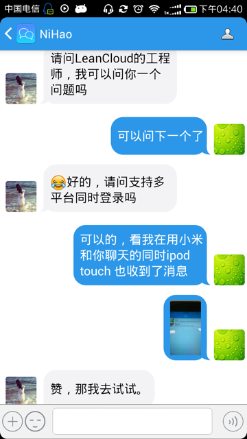
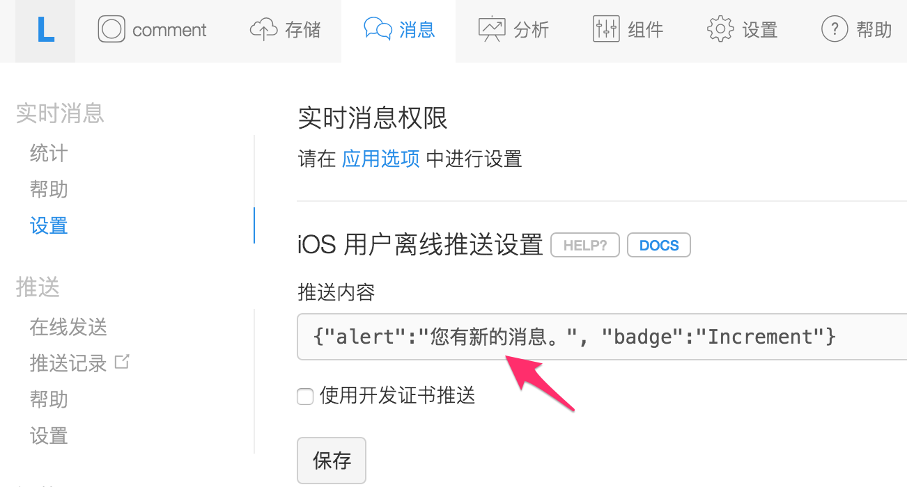
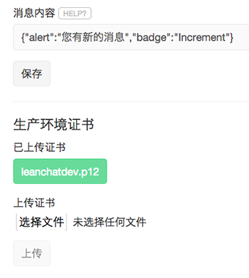

本文档仅适用于使用老版本 SDK 的用户，新用户请参考 最新版本的文档。
除了实时的消息推送服务外，LeanCloud 从 2.5.9 版本开始提供实时的点对点消息服务，这意味着，你将可以通过我们的服务开发实时的用户间聊天、游戏对战等互动功能。截至目前，我们提供 Android、JavaScript、iOS、Windows Phone 四个主要平台的客户端 SDK。
我们也提供了一些 Demo 帮助您快速入门，
LeanChat
在进入开发之前，请允许我们先介绍一下实时通信服务的功能和特性，加粗的条目是最新添加的：
实时通信服务中的每一个终端称为 Peer。Peer 拥有一个在应用内唯一标识自己 的ID。这个 ID 由应用自己定义，只要求是少于 50 个字符长度的字符串。系统中的每一条消息都来自于一个 Peer，发送到一个或多个 Peer。
简单来讲，你可以将 Peer 认为是参与通信的一个节点，通常就是你的应用上的某个用户。
LeanCloud 的通信服务允许一个 Peer ID 在多个不同的设备上登录，也允许一个设备上有多个 Peer ID 同时登录。开发者可以根据自己的应用场景选择ID。
为了做到细粒度的权限控制，在开启签名认证的应用中，Peer 需要先 watch 对方方可给对方发送消息。你可以在 watch 动作上增加签名认证来控制权限，防止骚扰。
Super Peer（超级用户）可以在不 watch 的状态下给任意 Peer 发送消息，不过 Super Peer 的登录需要服务器端签名控制，目前仅服务器端的 NodeJS SDK 支持 Super Peer。通常作为管理员角色来使用。
Peer 通过开启(open)一个 Session 加入实时通信服务，Peer 可以在 Session 中关注(watch)一组 Peer ID，当被关注者上下线时，会收到通知。Peer 在开启 Session 后会收到其他 Peer 的消息，也可以向其他 Peer 发送消息（当应用启用签名认证的情况下，需要首先关注(watch)其他 Peer 后才可以向其发送消息，关注(watch)步骤要求签名认证）。
Session 的几种状态：
Session.close
Session 中的几个动词：
在现代移动应用里，我们建议仅在用户进入互动环节（例如打开聊天对话界面，游戏对战界面）时watch目标用户，这样可以有效减少对方由于网络不稳定频繁上下线发送的通知，节约流量。
watch
实时通信服务的消息。我们的消息体允许用户一次传输不超过 5 KB的文本数据。开发者可以在文本协议基础上自定义自己的应用层协议。
消息分为暂态(transient)和持久消息。LeanCloud 为后者提供 7 天内最多 50 条的离线消息。暂态消息并不保存离线，适合开发者的控制协议。
我们现在还为通信消息提供存储、获取和删除功能，你可以通过 REST API 或 SDK 获取整个应用或特定对话的消息记录。
聊天群组，用户加入群后向群发送的消息可以被所有群成员收到。当有群成员退出，或有新的群成员加入时，所有群成员会收到相应的通知。用户可以对群做以下几个动作：
如果你对实时通信服务启用签名认证（从安全角度推荐你这么做），除了退出群以外的其他操作都需要签名，签名见下文。
应用所有的群组数据存储在数据管理中的 AVOSRealtimeGroups 表中，成员数据以数组形式存储在 m 列，应用可以通过 API 调用获得某个群组的所有成员，和某个用户加入的所有群组。
AVOSRealtimeGroups
m
2015 年 2 月开始，我们新增了开放群组的概念，用于支持聊天室、弹幕、网页直播等等不限参与人数的应用场景。开放群组在 AVOSRealtimeGroups 表里以 tr 列为 true 表示，用户可以在使用 REST API 创建开放群组的时候直接设置这个字段即可，SDK 用户可以在创建群组时设置相应属性。
tr
true
开放群组支持普通群组的创建、加入、离开等操作，消息记录会被保存并可供获取。
根据应用场景，开放群组与普通群组相比在功能上存在一定的取舍，具体为：
为了满足开发者对权限和认证的需求，我们设计了签名的概念。你可以在 控制台 > 设置 > 应用选项 > 聊天、推送 / 聊天服务，启用签名认证 中强制启用签名。启用后，所有的 Session open 和 watch 行为都需要包含签名，这样你可以对用户的登录以及他 可以关注哪些用户，进而可以给哪些用户发消息进行充分的控制。

我们提供了一个运行在 LeanCloud 云引擎上的 签名范例程序 ，他提供了基于 Web Hosting 和 Cloud Function 两种方式的签名实现，你可以根据实际情况选 择自己的实现。
签名采用Hmac-sha1算法，输出字节流的十六进制字符串(hex dump)，签名的消息格式如下：
app_id:peer_id:watch_peer_ids:timestamp:nonce
其中：
app_id
peer_id
watch_peer_ids
:
timestamp
nonce
签名的 key 必须是应用的 master key，您可以在应用设置的应用 Key 里找到，请保护好 Master Key ，不要泄露给任何无关人员。
开发者可以实现自己的 SignatureFactory，调用远程的服务器的签名接口获得签名。如果你没有自己的服务器，可以直接在我们的云引擎上通过 Web Hosting 动态接口实现自己的签名接口。在移动应用中直接做签名是非常危险的，它可能导致你的master key泄漏。
使用蟒蛇(Python)大法的签名范例：
import hmac, hashlib ### 签名函数 hmac-sha1 hex dump def sign(msg, k): return hmac.new(k, msg, hashlib.sha1).digest().encode('hex') ### 签名的消息和 key sign("app_id:peer_id:watch_peer_ids:timestamp:nonce", "master key")
在群组功能中，我们对加群，邀请和踢出群这三个动作也允许加入签名，他的签名格式是：
app_id:peer_id:group_id:group_peer_ids:timestamp:nonce:action
group_id
group_peer_ids
action
join
invite
kick
为了方便用户的特殊场景，我们设计了超级用户（Super Peer）的概念。超级用户可以无需 watch 某一个用户就给对方发送消息。超级用户的使用需要强制签名认证。
签名格式是在普通用户的签名消息后加常量 su。
su
app_id:peer_id:watch_peer_ids:timestamp:nonce:su
参考 Android 实时通信开发指南
参考 iOS 实时通信开发指南
参考 Windows Phone 8.0 开发指南
我们已经开源 JS Messaging SDK 了， 见 leancloud/realtime-messaging-jssdk 。
为了帮助大家更容易上手实时通信组件，我们开发了多平台应用 LeanChat，像一个简易版的微信，可点击这里下载。项目代码放在了 Github上，LeanChat-Android 和 LeanChat-iOS。先上图，

LeanChat 用到了大多数实时通信组件的提供的接口与功能，通过阅读它的源码，相信您可以很快学会使用通信组件。当然，首要的是能编译运行 LeanChat，项目Readme 上都有说明，仍然遇到问题的话请联系我们。
代码实现上有三点比较重要，
Msg
Json
messages
AVFile
url
除了上述代码，Android 项目中，推荐阅读 MsgReceiver.java与 ChatService.java。iOS 项目中，推荐阅读 CDSessionManager.m与 CDDatabaseService.m。
至于其它技术细节，请参考 项目wiki 。
云引擎 hook 允许你通过自定义的云引擎函数处理实时通信中的某些事件，修改 默认的流程等等。目前我们开放了两个需求比较强烈的 hook 云函数：
关于如何定义云函数，你可以参考 云引擎 -云函数 部分的说明。所有云引擎调用都有默认超时时间和容错机制，在出错的情况下将按照默认的流程执行后续的操作。
这个 hook 发生在消息到达实时通信服务，如果是群组消息，我们会解析出所有消息收件人。
你可以通过返回参数控制消息是否需要被丢弃，删除个别收件人，还可以修改消息内容。返回空对象（response.success({})）则会执行系统默认的流程。
response.success({})
请注意，在这个 hook 的代码实现的任何分支上请确保最终会调用 response.success 返回结果，使得消息可以尽快投递给收件人。这个 hook 将阻塞发送流程，因此请尽量减少无谓的代码调用，提升效率。
这个 hook 发生在有收件人离线的情况下，你可以通过这个 hook 自定义离线推 送行为，包括推送内容、被推送用户或略过推送。你也可以直接在 hook 中触发 自定义的推送。开放群组不会触发这个 hook。
示例应用 LeanChat 也用了云引擎 Hook 功能来自定义消息推送，通过解析上层消息协议获取消息类型和内容，通过fromPeer得到发送者的名称，组装成 pushMessage。这样，能使推送通知的用户体验更好。可参考相应的代码。
fromPeer
pushMessage
这里的错误码主要是 websocket 关闭连接时返回的状态码，当出现异常情况时，SDK会输出状态码到日志里，以下是对部分状态码的简单说明：
0
4103
4105
4107
4108
4109
4200
我们并不强制接入实时消息服务的应用使用 LeanCloud 的用户系统。实时消息服务中的 PeerId 可以由用户任意指定，只要在用户系统中保证一致即可（在匿名聊天 Demo KeepAlive 里我们用的是 installationId）。对已有用户系统的应用来说，你可以使用自己的用户 ID 作为 PeerId，并通过签名做权限认证。
当然支持。你可以把图片、语言等 blob 上传到我们的文件存储服务，再传输 URL，并在 UI 上进行适当地展示。这么做的好处：
当然可以。我们的Android聊天服务是和后台的推送服务共享连接的，所以只要有网络就永远在线，不需要专门做推送。消息达到后，你可以根据用户的设置来 判断是否需要弹出通知。网络断开时，我们为用户保存50条的离线消息。
iOS在应用退出前台后即离线，这时收到消息会触发一个APNS的推送。因为APNS 有消息长度限制，且你们的消息正文可能还包含上层协议，所以 我们现在APNS 的推送内容是让应用在控制台设置一个静态的APNS json，如“您有新的消息” 。

桌面图标也会有相应的红点badge，清除 badge 的操作请参考 iOS推送指南。
badge
云引擎 Hook 已支持自定义消息推送，可推送具体的消息内容，可参考云引擎-Hook 章节。
请先看上一个 FAQ。在控制台的设置页面，填写“您有新的未读消息”后，当对方不在线的时候，便会触发一个 APNS 的推送。首先，请确保控制台能向 iOS 推送消息，也即如下图所示的推送能顺利到达 iOS 系统，请参考消息推送指南。
之后，还要确保对方确实是离线，如果对方程序在前台并且网络良好，则不会触发推送。如果对方网络未连接，则下次联网的时候收到回调，也不触发推送。也可以利用控制台实时消息页的用户状态查询来确保对方是在离线状态，如下图。
离线消息推送用的是生产环境编辑框里上传的证书，即无论下图中上传的是您应用的开发证书还是生产证书，都将用来作为 iOS 离线消息推送使用的证书。所以，调试时可能要上传开发证书，如果应用已发布不方便更改这里的证书，您可以创建另外一个应用来调试。 LeanChat 应用在调试期间所用的证书，如下图。

检查方法总结如下：
聊天记录的查询我们支持 4 种方式：
md5
参考消息记录的 REST API。
你可以调用 REST API 获得某个用户的未读消息数。
我们目前的设计里，黑名单等权限控制是通过签名来实现的。如果你是自己比较成熟的应用，你可能已经有了一定的用户关系、屏蔽关系，我们把这个步骤通过签名来实现，避免你把所有的关系数据都同步到我们的服务器。
如果你启用了签名，用户间发起对话、用户进入聊天群组，都需要通过服务器签名认证，在这一步应用可以实施自己的黑名单功能。
你可以利用 nodejs 客户端编写一些机器人，或是和自有的系统集成。
我们的群组信息实际上是 LeanCloud 的一个标准的数据表 AVOSRealtimeGroups。对于群组的元信息，你可以在关联的表里设置，也可以在这个表里添加新的列。请对这个表设置合理的 ACL 来保证内容不会被恶意篡改。
注意请不要通过修改 m 列来改变群组成员，这样目标用户可能无法立刻收到通知，会造成数据不一致的情况。
我们在服务器端已经通过一份敏感词的列表对目前消息进行过滤，这部分功能无 需用户参与，是内置默认支持的。
对于不方便使用 Node.js 客户端的用户，我们最近提供了一个 REST API 用于给特定用户发消息。
实时通信服务开发指南（V1）
除了实时的消息推送服务外，LeanCloud 从 2.5.9 版本开始提供实时的点对点消息服务，这意味着，你将可以通过我们的服务开发实时的用户间聊天、游戏对战等互动功能。截至目前，我们提供 Android、JavaScript、iOS、Windows Phone 四个主要平台的客户端 SDK。
我们也提供了一些 Demo 帮助您快速入门，
LeanChat，类似微信，LeanChat-Android，LeanChat-iOS功能和特性
在进入开发之前，请允许我们先介绍一下实时通信服务的功能和特性，加粗的条目是最新添加的：
核心概念
Peer
实时通信服务中的每一个终端称为 Peer。Peer 拥有一个在应用内唯一标识自己 的ID。这个 ID 由应用自己定义，只要求是少于 50 个字符长度的字符串。系统中的每一条消息都来自于一个 Peer，发送到一个或多个 Peer。
简单来讲，你可以将 Peer 认为是参与通信的一个节点，通常就是你的应用上的某个用户。
LeanCloud 的通信服务允许一个 Peer ID 在多个不同的设备上登录，也允许一个设备上有多个 Peer ID 同时登录。开发者可以根据自己的应用场景选择ID。
为了做到细粒度的权限控制，在开启签名认证的应用中，Peer 需要先 watch 对方方可给对方发送消息。你可以在 watch 动作上增加签名认证来控制权限，防止骚扰。
Super Peer（超级用户）可以在不 watch 的状态下给任意 Peer 发送消息，不过 Super Peer 的登录需要服务器端签名控制，目前仅服务器端的 NodeJS SDK 支持 Super Peer。通常作为管理员角色来使用。
Session
Peer 通过开启(open)一个 Session 加入实时通信服务，Peer 可以在 Session 中关注(watch)一组 Peer ID，当被关注者上下线时，会收到通知。Peer 在开启 Session 后会收到其他 Peer 的消息，也可以向其他 Peer 发送消息（当应用启用签名认证的情况下，需要首先关注(watch)其他 Peer 后才可以向其发送消息，关注(watch)步骤要求签名认证）。
Session 的几种状态：
Session.close方法时发生，用户注销实时通信服务，不再能够接收到消息或推送通知Session 中的几个动词：
在现代移动应用里，我们建议仅在用户进入互动环节（例如打开聊天对话界面，游戏对战界面）时
watch目标用户，这样可以有效减少对方由于网络不稳定频繁上下线发送的通知，节约流量。Message
实时通信服务的消息。我们的消息体允许用户一次传输不超过 5 KB的文本数据。开发者可以在文本协议基础上自定义自己的应用层协议。
消息分为暂态(transient)和持久消息。LeanCloud 为后者提供 7 天内最多 50 条的离线消息。暂态消息并不保存离线，适合开发者的控制协议。
我们现在还为通信消息提供存储、获取和删除功能，你可以通过 REST API 或 SDK 获取整个应用或特定对话的消息记录。
Group
聊天群组，用户加入群后向群发送的消息可以被所有群成员收到。当有群成员退出，或有新的群成员加入时，所有群成员会收到相应的通知。用户可以对群做以下几个动作：
如果你对实时通信服务启用签名认证（从安全角度推荐你这么做），除了退出群以外的其他操作都需要签名，签名见下文。
应用所有的群组数据存储在数据管理中的
AVOSRealtimeGroups表中，成员数据以数组形式存储在m列，应用可以通过 API 调用获得某个群组的所有成员，和某个用户加入的所有群组。2015 年 2 月开始，我们新增了开放群组的概念，用于支持聊天室、弹幕、网页直播等等不限参与人数的应用场景。开放群组在
AVOSRealtimeGroups表里以tr列为true表示，用户可以在使用 REST API 创建开放群组的时候直接设置这个字段即可，SDK 用户可以在创建群组时设置相应属性。开放群组支持普通群组的创建、加入、离开等操作，消息记录会被保存并可供获取。
根据应用场景，开放群组与普通群组相比在功能上存在一定的取舍，具体为：
权限和认证
为了满足开发者对权限和认证的需求，我们设计了签名的概念。你可以在 控制台 > 设置 > 应用选项 > 聊天、推送 / 聊天服务，启用签名认证 中强制启用签名。启用后，所有的 Session open 和 watch 行为都需要包含签名，这样你可以对用户的登录以及他 可以关注哪些用户，进而可以给哪些用户发消息进行充分的控制。

云引擎签名范例
我们提供了一个运行在 LeanCloud 云引擎上的 签名范例程序 ，他提供了基于 Web Hosting 和 Cloud Function 两种方式的签名实现，你可以根据实际情况选 择自己的实现。
签名方法
签名采用Hmac-sha1算法，输出字节流的十六进制字符串(hex dump)，签名的消息格式如下：
其中：
app_id是你的应用 IDpeer_id是打开此 Session 的 Peer IDwatch_peer_ids是 open 或 watch 请求中关注的peer ids，升序排序后以:分隔timestamp是当前的UTC时间距离unix epoch的秒数nonce为随机字符串签名的 key 必须是应用的 master key，您可以在应用设置的应用 Key 里找到，请保护好 Master Key ，不要泄露给任何无关人员。
开发者可以实现自己的 SignatureFactory，调用远程的服务器的签名接口获得签名。如果你没有自己的服务器，可以直接在我们的云引擎上通过 Web Hosting 动态接口实现自己的签名接口。在移动应用中直接做签名是非常危险的，它可能导致你的master key泄漏。
使用蟒蛇(Python)大法的签名范例：
群组功能的签名
在群组功能中，我们对加群，邀请和踢出群这三个动作也允许加入签名，他的签名格式是：
其中：
app_id,peer_id,timestamp和nonce的含义同上group_id是此次行为关联的群组 ID，对于创建群尚没有id的情况，group_id是空字符串group_peer_ids是:分隔的升序排序的 peer id，即邀请和踢出的 peer_id，对加入群的情况，这里是空字符串action是此次行为的动作，三种行为分别对应常量join,invite和kickSuper Peer
为了方便用户的特殊场景，我们设计了超级用户（Super Peer）的概念。超级用户可以无需 watch 某一个用户就给对方发送消息。超级用户的使用需要强制签名认证。
签名格式是在普通用户的签名消息后加常量
su。Android 开发指南
参考 Android 实时通信开发指南
iOS 开发指南
参考 iOS 实时通信开发指南
Windows Phone 8.0 开发指南
参考 Windows Phone 8.0 开发指南
JavaScript 开发指南
我们已经开源 JS Messaging SDK 了， 见 leancloud/realtime-messaging-jssdk 。
LeanChat Demo
为了帮助大家更容易上手实时通信组件，我们开发了多平台应用 LeanChat，像一个简易版的微信，可点击这里下载。项目代码放在了 Github上，LeanChat-Android 和 LeanChat-iOS。先上图，

LeanChat 用到了大多数实时通信组件的提供的接口与功能，通过阅读它的源码，相信您可以很快学会使用通信组件。当然，首要的是能编译运行 LeanChat，项目Readme 上都有说明，仍然遇到问题的话请联系我们。
代码实现上有三点比较重要，
Msg对象，它代表一个具体的消息对象，Msg对象可转换成Json文本，发送给对方，对方接收到后可转换成Msg对象。可参考 Msg.java。messages表，用来保存消息，字段基本和Msg对象的成员一一对应。可参考 DBMsg.java。AVFile，得到url之后作为Msg对象的一部分发送给对方。除了上述代码，Android 项目中，推荐阅读 MsgReceiver.java与 ChatService.java。iOS 项目中，推荐阅读 CDSessionManager.m与 CDDatabaseService.m。
至于其它技术细节，请参考 项目wiki 。
云引擎 Hook
云引擎 hook 允许你通过自定义的云引擎函数处理实时通信中的某些事件，修改 默认的流程等等。目前我们开放了两个需求比较强烈的 hook 云函数：
关于如何定义云函数，你可以参考 云引擎 -云函数 部分的说明。所有云引擎调用都有默认超时时间和容错机制，在出错的情况下将按照默认的流程执行后续的操作。
_messageReceived
这个 hook 发生在消息到达实时通信服务，如果是群组消息，我们会解析出所有消息收件人。
你可以通过返回参数控制消息是否需要被丢弃，删除个别收件人，还可以修改消息内容。返回空对象（
response.success({})）则会执行系统默认的流程。请注意，在这个 hook 的代码实现的任何分支上请确保最终会调用 response.success 返回结果，使得消息可以尽快投递给收件人。这个 hook 将阻塞发送流程，因此请尽量减少无谓的代码调用，提升效率。
参数
返回
_receiversOffline
这个 hook 发生在有收件人离线的情况下，你可以通过这个 hook 自定义离线推 送行为，包括推送内容、被推送用户或略过推送。你也可以直接在 hook 中触发 自定义的推送。开放群组不会触发这个 hook。
参数
返回
示例应用 LeanChat 也用了云引擎 Hook 功能来自定义消息推送，通过解析上层消息协议获取消息类型和内容，通过
fromPeer得到发送者的名称，组装成pushMessage。这样，能使推送通知的用户体验更好。可参考相应的代码。服务器端错误码说明
这里的错误码主要是 websocket 关闭连接时返回的状态码，当出现异常情况时，SDK会输出状态码到日志里，以下是对部分状态码的简单说明：
0websocket 正常关闭，可能发生在服务器重启，或本地网络异常的情况。通常重试可以解决。4103Peer Id 格式错误，超过50个字符。4105Session 没有打开就发送消息，或执行其他操作。常见的错误场景是调用 open session 后直接发送消息，正确的用法是在 Session 打开的回调里执行。4107读超时，服务器端长时间没有收到客户端的数据，切断连接。SDK 包装了心跳包的机制，正常情况下不会出现这个错误。如果遇到请检查网络并重试。4108登录超时，连接后长时间没有完成 session open。如果开启了签名认证，可能由于签名错误出现这个情况，请查看。4109包过长。消息大小超过 5KB，请缩短消息或者拆分消息。4200服务器内部错误，如果反复出现请收集相关线索并创建工单，我们会尽快解决。FAQ
我有自己的用户系统
我们并不强制接入实时消息服务的应用使用 LeanCloud 的用户系统。实时消息服务中的 PeerId 可以由用户任意指定，只要在用户系统中保证一致即可（在匿名聊天 Demo KeepAlive 里我们用的是 installationId）。对已有用户系统的应用来说，你可以使用自己的用户 ID 作为 PeerId，并通过签名做权限认证。
聊天支持图片、语音吗？
当然支持。你可以把图片、语言等 blob 上传到我们的文件存储服务，再传输 URL，并在 UI 上进行适当地展示。这么做的好处：
聊天离线时可以推送吗？
当然可以。我们的Android聊天服务是和后台的推送服务共享连接的，所以只要有网络就永远在线，不需要专门做推送。消息达到后，你可以根据用户的设置来 判断是否需要弹出通知。网络断开时，我们为用户保存50条的离线消息。
iOS在应用退出前台后即离线，这时收到消息会触发一个APNS的推送。因为APNS 有消息长度限制，且你们的消息正文可能还包含上层协议，所以 我们现在APNS 的推送内容是让应用在控制台设置一个静态的APNS json，如“您有新的消息” 。

桌面图标也会有相应的红点
badge，清除badge的操作请参考 iOS推送指南。云引擎 Hook 已支持自定义消息推送，可推送具体的消息内容，可参考云引擎-Hook 章节。
为什么我的 iPhone 收不到离线消息推送？
请先看上一个 FAQ。在控制台的设置页面，填写“您有新的未读消息”后，当对方不在线的时候，便会触发一个 APNS 的推送。首先，请确保控制台能向 iOS 推送消息，也即如下图所示的推送能顺利到达 iOS 系统，请参考消息推送指南。
之后，还要确保对方确实是离线，如果对方程序在前台并且网络良好，则不会触发推送。如果对方网络未连接，则下次联网的时候收到回调，也不触发推送。也可以利用控制台实时消息页的用户状态查询来确保对方是在离线状态，如下图。
离线消息推送用的是生产环境编辑框里上传的证书，即无论下图中上传的是您应用的开发证书还是生产证书，都将用来作为 iOS 离线消息推送使用的证书。所以，调试时可能要上传开发证书，如果应用已发布不方便更改这里的证书，您可以创建另外一个应用来调试。 LeanChat 应用在调试期间所用的证书，如下图。

检查方法总结如下：
聊天记录
聊天记录的查询我们支持 4 种方式：
:分隔md5所得的字符串；参考消息记录的 REST API。
未读消息数
你可以调用 REST API 获得某个用户的未读消息数。
黑名单
我们目前的设计里，黑名单等权限控制是通过签名来实现的。如果你是自己比较成熟的应用，你可能已经有了一定的用户关系、屏蔽关系，我们把这个步骤通过签名来实现，避免你把所有的关系数据都同步到我们的服务器。
如果你启用了签名，用户间发起对话、用户进入聊天群组，都需要通过服务器签名认证，在这一步应用可以实施自己的黑名单功能。
如何实现自动回复的客服
你可以利用 nodejs 客户端编写一些机器人，或是和自有的系统集成。
我希望给群组增加一些自定义数据，如名字
我们的群组信息实际上是 LeanCloud 的一个标准的数据表
AVOSRealtimeGroups。对于群组的元信息，你可以在关联的表里设置，也可以在这个表里添加新的列。请对这个表设置合理的 ACL 来保证内容不会被恶意篡改。注意请不要通过修改
m列来改变群组成员，这样目标用户可能无法立刻收到通知，会造成数据不一致的情况。敏感词过滤怎么做
我们在服务器端已经通过一份敏感词的列表对目前消息进行过滤，这部分功能无 需用户参与，是内置默认支持的。
能否通过 API 给用户发消息
对于不方便使用 Node.js 客户端的用户，我们最近提供了一个 REST API 用于给特定用户发消息。